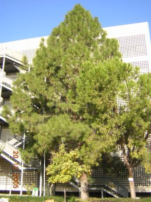
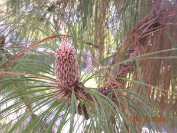

|
Pinus
canariensis C. Sm. ex DC.
in C.L. von Buch, Phys. Beschr. Canar.
Ins.: 159 (1828)
|
Pináceas |
| Pino canario | Árbol aciculifolio |
|
Árbol aciculifolio, monoico; de unos 20 metros de altura y 60 cm de diámetro [puede alcanzar hasta 60 m de altura y 2,5 m de diámetro (1)]; corteza de color pardo claro en los juveniles, pasando al pardo rojizo y a un gris ceniciento al envejecer; copa densa, de porte piramidal en los ejemplares jóvenes y más aparasolada en los más viejos. Hojas aciculares persistentes de 20-30 cm x 1,5 mm, dispuestas en grupos de 3, flexibles y colgantes, verdes. Piñas masculinas agrupadas en espigas cónicas de 5 a 10 cm, ovaladas y amarillo verdosas; piñas femeninas de unos 20 cm, cónicas; piñones de 1,2 cm en grupos de dos en cada escama del estróbilo, con ala membranosa de 2 cm. Floración a principios de primavera (marzo- mayo) |
 Fotos: Esperanza Mª Gómez Ruiz, 2005 |
|  |
Observaciones:
Etimología: Pinus, nombre clásico latino del pino; canariensis, procedente de las Islas Canarias. Posee una madera de alta calidad muy apreciada. Tiene yemas sobre la madera que lo cubren de acículas, dándole un aspecto muy ornamental. Resiste grandes oscilaciones térmicas ( -10º / 40º), siendo poco exigente en los tipos de suelo. Es muy resistente al fuego por la capa de corcho de su tronco y por su capacidad para rebrotar, única entre los pinos españoles. |
| Área de origen.- Islas Canarias | |
| Uso en el campus: Un único ejemplar. | Localización:
E.T.S.
Ingeniería
Informática
Jardín
Noreste
|
| (1): A. López Lillo. Árboles en España: manual de identificación, Mundi-Prensa | |
| Esperanza Mª Gómez Ruiz (2005) & Carlos Romero Zarco (2006) | |